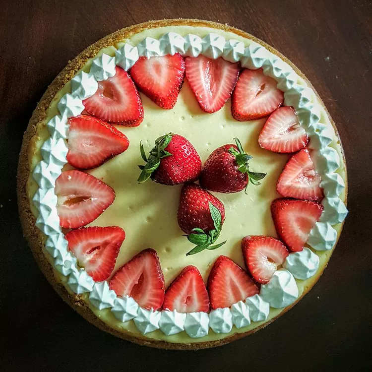

Home

Make this creamy, decadent dessert, then add zest with new flavors.
- 1 tablespoon softened butter
- 3 tablespoons crumbs from Famous Chocolate Wafers, graham crackers or ginger snaps, OR
- 1 (3 ounce) package soft ladyfingers (24 total) left whole, but trimmed to fit pan (Optional)
- 3 (8 ounce) packages cream cheese, at room temperature
- 1 cup sugar
- 3 large eggs, at room temperature
- 2 teaspoons vanilla extract
- ¼ cup heavy cream
- ¼ cup sour cream
- Heavy-duty foil for pan
- Adjust oven rack to middle position, and heat oven to 325 degrees. Brush interior of a 9-inch springform pan with butter. Add crumbs of choice and tilt pan in all directions to evenly coat, or line pan sides with ladyfingers. Tear off two long strips of heavy-duty foil, overlap in a cross pattern, and set the pan in the middle. Bring up sides, crimping around exterior top of the pan and forming a tight seal. Set it in a roasting pan large enough to hold it.
- Beat cream cheese with an electric mixer until smooth. Gradually add sugar and beat on medium speed until fully incorporated. Scrape down bowl sides and beat again until smooth. Add eggs, one at a time, scraping down bowl after each addition to ensure a creamy batter. Slowly beat in vanilla, then cream and sour cream. (Meanwhile, bring tea kettle of water to a boil, then turn off heat.)
- Pour batter into prepared pan. Set the roasting pan on oven rack and pour in enough boiling water to come halfway up the side of the springform pan. Bake until cake perimeter is set but center still jiggles, about 40 minutes (some flavor variations will take longer). Turn off heat and leave oven door ajar; let cheesecake sit in oven so the residual heat continues to cook it, about 30 minutes.
- Remove pan from water; set on a wire rack. Let cool to room temperature. Cover and refrigerate until well-chilled, about 3 hours (can be refrigerated up to 4 days). Run a sharp knife around the edge of the pan, loosen the spring siding and serve.